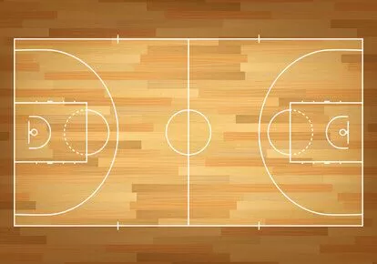
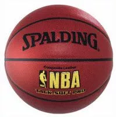
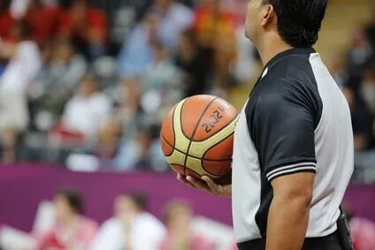
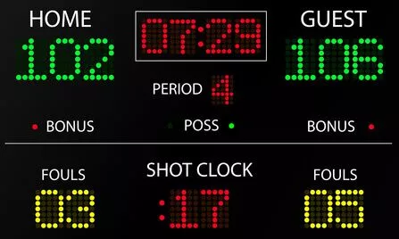
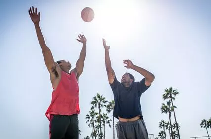

Wie spielt man Basketball?
In diesem text lernen sie was basketball überhaupt ist und wie man es spielt viel spaß beim lesen!
Die fünf Grundprinzipien beim Basketball nach Dr. James Naismith's Prinzipien und Regeln von 1891
- Der Ball soll rund, groß und leicht sein. Er muss mit den Händen geführt werden.
- Laufen mit dem Ball führt beim Football und Rugby zu „tackling“, deshalb ist es im Basketball verboten.
- Der Ball darf beliebig oft hin und her geworfen werden. Jeder Spieler ist berechtigt, ihn zu fangen.
- Beide Mannschaften dürfen die gesamte Spielfläche besetzen, körperlicher Kontakt ist aber zu vermeiden.
- Das Ziel/ Tor, durch das der Ball geworfen werden muss, wird horizontal und erhöht angebracht.
Die 13 Basketball Grundregeln nach Dr. Naismith
- Ziel ist es, den Ball in Korb des Gegners zu werfen, welcher in 10 Fuß Höhe befestigt ist.
- Der Ball darf mit einer oder beiden Händen in jede beliebige Richtung geworfen werden.
- Der Ball kann auch mit einer oder beiden Händen geschlagen werden, aber nie mit der Faust.
- Es ist nicht erlaubt, mit dem Ball zu laufen.
- Der Ball darf in oder mit den Händen gehalten werden, nie aber mit den Armen oder dem Körper.
- Schultern, Halten, Stoßen, Beinstellen oder Schlagen sind verboten.Die erste Regelverletzung wird als Foul gewertet. Die zweite Verletzung führt zu einer Disqualifikation des Spielers bis zum nächsten Punkt. Absichtliches Foul führt zum endgültigen Spielausschluss.
- Ein Foul ist, wenn ein Spieler den Ball mit der Faust schlägt oder gegen die Regeln 3, 4 und 5 verstößt. Drei aufeinanderfolgende Fouls einer Mannschaft werden als ein Punkt für den Gegner gezählt.
- Ein Punkt wird gewertet, wenn der Ball vom Feld in den Korb geschlagen oder geworfen wird.
- Bei einem Ausball muss der Ball innerhalb von 5 Sekunden wieder eingeworfen werden. Ansonsten wechselt der Ballbesitz.
- Der Schiedsrichter kontrolliert die Einhaltung der Spielregeln und zeigt die Fouls an, die der Oberschiedsrichter (Anschreiber) notiert.
- Der Schiedsrichter entscheidet über alle den Ball, das Spiel und das Ergebnis betreffenden Situationen.
- Die Spielzeit ergibt sich aus zweimal 15 Minuten, mit 5 Minuten Pause.
- Mannschaft mit den meisten Punkten ist Sieger. Bei Unentschieden kann das Spiel verlängert werden.
Das Basketballspielfeld
Laut den offiziellen Basketball Regeln müssen Basketballspiele immer auf einem rechteckigen Spielfeld stattfinden, dass eine harte
Oberfläche besitzt. Bei den offiziellen Wettbewerben der FIBA muss dieses Spielfeld exakt 28 m mal 15 m groß sein.
Dieses Spielfeld wird durch verschiedene Kreise und Linien in unterschiedliche Zonen unterteilt, die jeweils eigene Funktionen besitzen.

Die Rechtecke unter den Körben werden als „Zone“ bezeichnet. Diese sind insbesondere für die 3-Sekunden-Regel wichtig.
Die Halbkreise an den beiden Zonen werden als Freiwurflinie bezeichnet und dienen als Markierung für die Durchführung von
genehmigten Freiwürfen. Weiterhin befindet sich auf jeder Spielfeldhälfte ein großer Halbkreis, der als Dreipunkt-Line bezeichnet
wird und kennzeichnet, ab welcher Distanz ein Wurf in den Korb mit drei Punkten bewertet wird.
Letztlich gibt es noch einen Halbkreis unter dem Korb. Dieser markiert einen Bereich, in dem sämtliche Fouls der Kategorien Rempeln
und Stoßen durch einen angreifenden Spieler nicht bestraft werden dürfen.
Die Rechtecke unter den Körben werden als „Zone“ bezeichnet. Diese sind insbesondere für die 3-Sekunden-Regel wichtig.
Die Halbkreise an den beiden Zonen werden als Freiwurflinie bezeichnet und dienen als Markierung für die Durchführung von
genehmigten Freiwürfen. Weiterhin befindet sich auf jeder Spielfeldhälfte ein großer Halbkreis, der als Dreipunkt-Line bezeichnet
wird und kennzeichnet, ab welcher Distanz ein Wurf in den Korb mit drei Punkten bewertet wird.
Letztlich gibt es noch einen Halbkreis unter dem Korb. Dieser markiert einen Bereich, in dem sämtliche Fouls der Kategorien
Rempeln und Stoßen durch einen angreifenden Spieler nicht bestraft werden dürfen.
Die Mannschaften
Auf einem Spielfeld spielen immer zwei Mannschaften. Direkt auf dem Feld dürfen sich lediglich fünf Feldspieler befinden und
aktiv an dem Spiel teilnehmen. Der Rest der Mannschaften befindet sich auf der Ersatzbank. Jene fünf Spieler, die zu Beginn
eines Spiels als Feldspieler eingesetzt werden, bezeichnet man als Starting Five.
Die Spieler können jederzeit während einer Spielunterbrechung gewechselt werden. Dabei wird die Anzahl
der Wechsel nicht begrenzt. Es ist also theoretisch unbegrenzt oft möglich, einen Spieler oder eine Position auszuwechseln.
Der Spielball

Für das Basketball Spiel gibt es je nach Alter und Geschlecht erschiedene Basketball Größen.Im offiziellen Herren Bereich wird ein Ball mit der Größe 7 verwendet, und bei den Damen
mit der Größe 6. Es gibt aber weiterhin noch die Basketball Größe 3 ; Größe 4 und Größe 5.
Basketballregeln – Die Schiedsrichter
Die offiziellen Basketballregeln besagen, dass ein Spiel grundsätzlich von mindestens zwei Schiedsrichtern
geleitet werden muss. Bei der NBA und anderen hohen nationalen und internationalen Ligen wie auch bei der NCAA werden sogar
drei Schiedsrichter eingesetzt, um ein Spiel zu überwachen und zu leiten.

Dabei ist jeder Schiedsrichter gleichberechtigt und erhält lediglich einen anderen Verantwortungsbereich.
So sind die Schiedsrichter dafür verantwortlich, einen bestimmten Bereich des Spielfeldes zu beobachten.
Bei einem Einsatz von zwei Schiedsrichtern befindet sich ein Schiedsrichter direkt hinter der Grundlinie
der verteidigenden Mannschaft. Der zweite Schiedsrichter nimmt eine Position direkt hinter dem angreifenden Team
(gegnerische Mannschaft) ein, und muss einen konstanten Abstand von 3 m zu dem Ball einhalten.
Um die Einhaltung der allgemeinen Basketball Regeln zu gewährleisten, gibt es neben den Schiedsrichtern ebenso
ein Kampfgericht an einem sogenannten Anschreibetisch. An diesem sitzen für gewöhnlich die Zeitnehmer und Anschreiber.
Die Zeiteinteilung im Basketball
In der Regel wird die Basketball Spielzeit in vier gleich große zeitliche Einheiten unterteilt. Die Dauer dieser Viertel kann sich von Liga zu Liga unterscheiden. So dauert jedes Viertel bei Verbänden, die der FIBA angehören, genau zehn Minuten, während in der NBA hingegen pro Viertel ganze 12 Minuten lang gespielt wird.

Sollte am Ende des vierten Viertels der Punktestand zwischen den beiden Teams unentschieden sein, kommt es zu einer Verlängerung von fünf Minuten.
Ursprünglich wurden nach Regelwerk lediglich zwei Halbzeiten gespielt, die eine Länge von 20 Minuten aufwiesen. Die entsprechende
Einteilung in vier Viertel laut aktuellen Basketball Regeln wurde aus der NBA übernommen, die schon seit längerer Zeit mit vier Vierteln spielt.
Die einzige akzeptierte Ausnahme besteht in der US-amerikanischen College-Liga. So wird aktuell in der NCAA noch immer mit zwei
Halbzeiten gespielt.
Die Punktevergabe
Am Ende des Spieles wird der Sieger anhand der Punkte ermittelt. Das Team, das die meisten Punkte besitzt, gewinnt das Spiel. Für einen gewöhnlichen
erfolgreichen Wurf werden dem Team des Werfers zwei Punkte gewährt. Befindet sich der Werfer jedoch hinter der sogenannten Dreipunktelinie, werden seinem
Team drei Punkte für den Wurf gutgeschrieben. Für gewöhnlich ist diese Linie an diesem Punkt exakt 6,75 m vom Zentrum des Korbes entfernt.
Sollte ein Spieler während eines Korbwurfversuches gefoult werden, wird seinem Team die gleiche Anzahl an Freiwürfen gewährt, wie bei
einem erfolgreichen Wurf Punkte möglich gewesen wären. Die gewährten Freiwürfe erfolgen stets von der Freiwurflinie, die in der Regel 5,8 m vom Zentrum
des Korbes entfernt ist.
Wenn ein Spieler bei einem Wurfversuch gefoult wird und kann dennoch einen erfolgreichen Wurf erzielen, werden diese Punkte regulär gezählt.
Der Spieler erhält zusätzlich die Möglichkeit, einen einzigen Freiwurf durchzuführen, um zusätzliche Punkte zu erzielen.
Der Sprungball
Laut den Basketball Regeln beginnt jedes Spiel mit einem Sprungball. Dieser entscheidet über den ersten Ballbesitz.

Für einen korrekten und regelkonformen Sprungball wirft einer der Schiedsrichter den Ball direkt im Mittelpunkt des Spielfeldes zwischen
zwei Spielern in die Luft. Beide Spieler versuchen, durch einen geschickten Sprung den Ball einem verbündeten Mitspieler zuzuspielen.
Während der nachfolgenden Viertel wird der Ballbesitz zwischen beiden Teams abgewechselt. Der aktuelle Ballbesitz kann an einem Richtungspfeil
abgelesen werden, der sich am Kampfgericht befindet.
Auch hier sind die Basketball Regeln nicht überall identisch. So wird der Sprungball lediglich in der NBA ebenfalls nach anderen
Spielsituationen eingesetzt. So entscheidet in dieser Liga grundsätzlich der Sprungball über den Ballbesitz, wenn dieser aufgrund der allgemeinen Spiellage unklar ist.